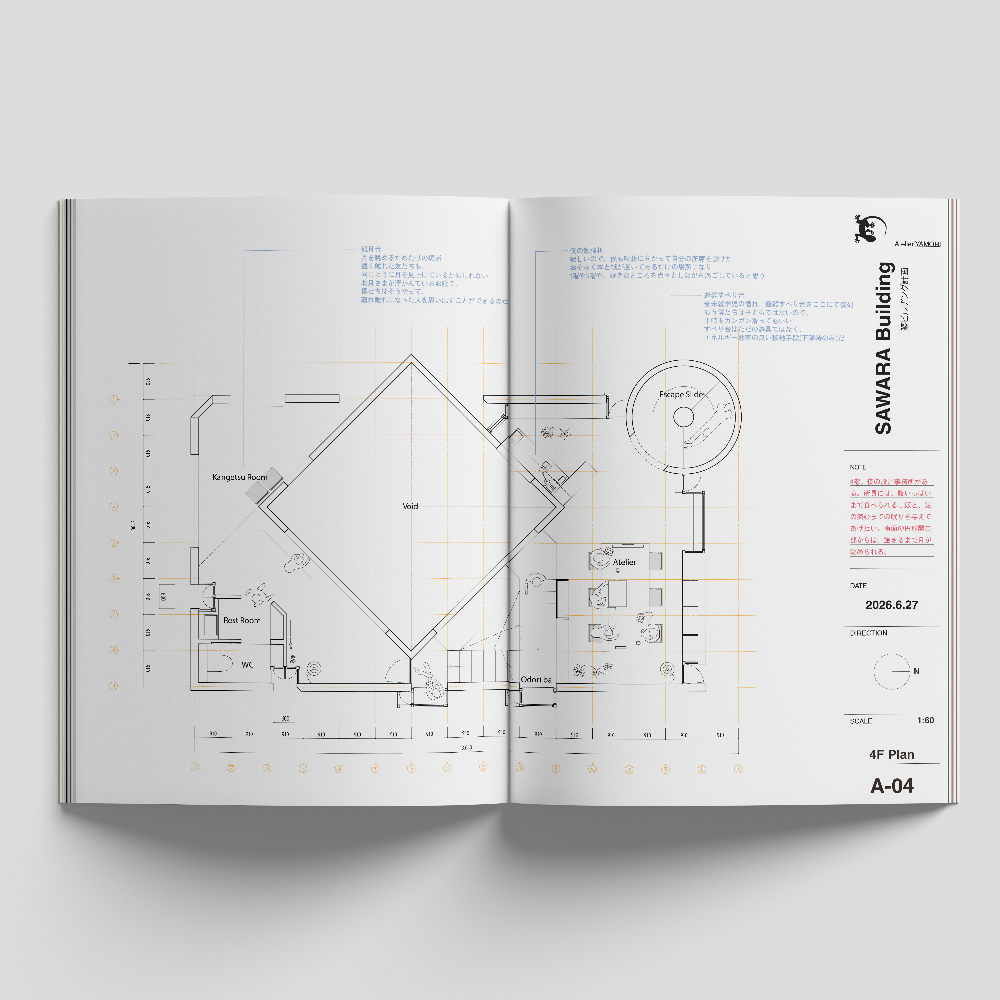

SAWARA BUILDING MAGAZINE #1
創刊号。生きのびようと思って、北岡くんと西浦さんにプレゼンして、鰆ビルをつくりませんかと提案した。
承認されたので、雑誌をひとまずつくった。色んな人と雑誌をつくること、コデックス装をやること、150部売ること。
ここら辺ができて、非常に満足である。僕と北岡くんはもうそんなに長くないかもしれないし、どうせなら死ぬ前にやりたいことをやっておこうという話で、このような無茶なスタイルになった。
コデックスは自分達で縫っているので、一向に終わる気配がないが、木を取り直して、また縫っていこう。
一冊目はまあこんな感じで、勢いでいけたりするので、問題は二冊目である。早く企画を練らないと。これはまた増刷して、いろんな人に届いても良いと思っている。
勿論その時は、コデックスなんてしない。なので、初版限定150部を持っている人は、プレミアになるまで、大切に持っていてください。
編集：舟木健太郎 北岡智也 うさき
発行：鰆ビルヂング


